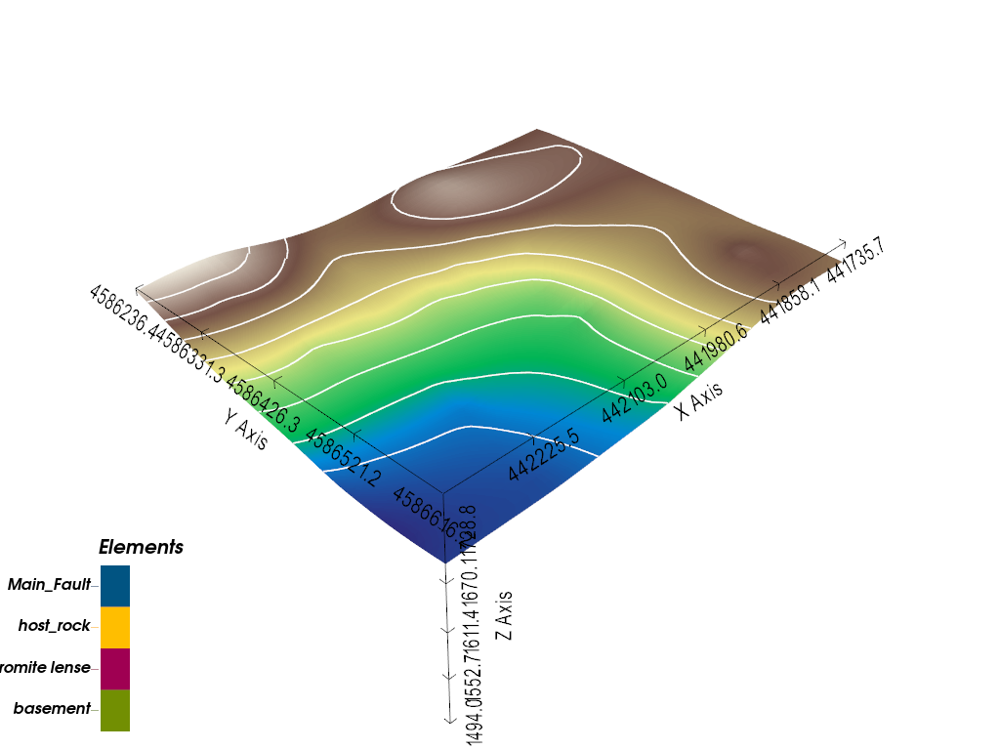
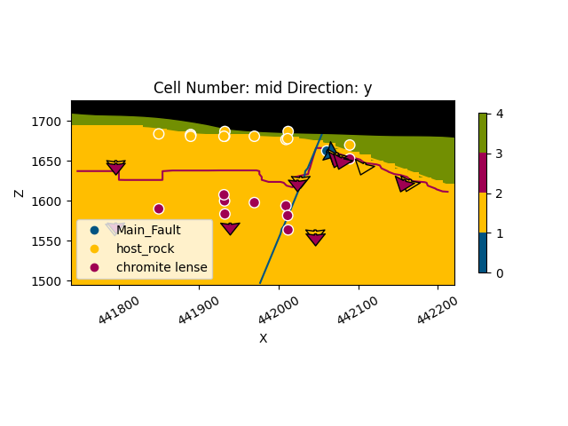
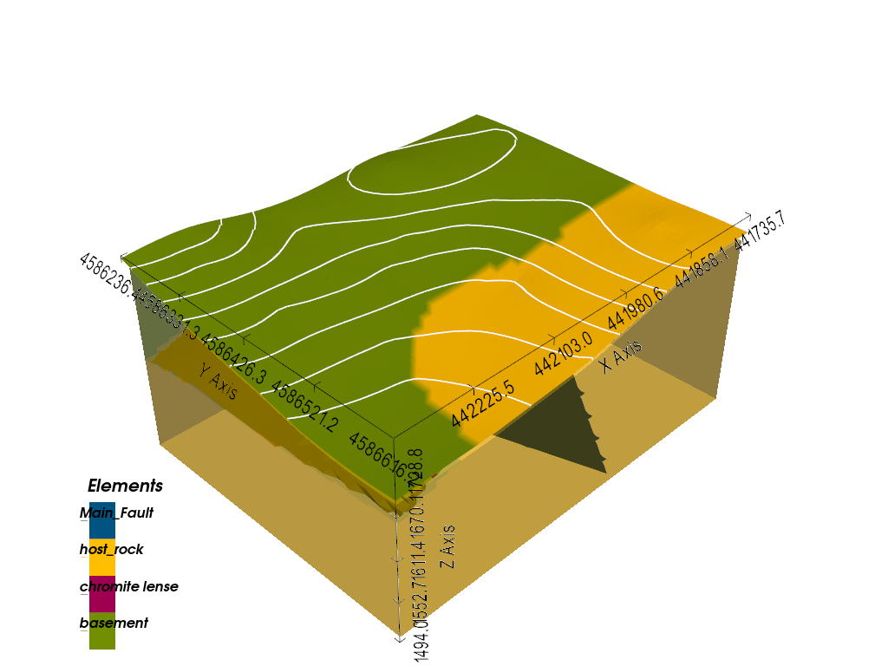

Note
Go to the end to download the full example code.
Geological Model with Faults - Soricom Chromite Deposit¶
This example creates a 3D geological model featuring fault structures for the Soricom chromite deposit using GemPy.
Overview
The Soricom deposit is a chromite-bearing geological formation that demonstrates the integration of fault structures into 3D geological modeling. This example shows how to model fault-offset lithological units, a common scenario in mineral exploration and resource estimation.
Geological Context
The Soricom model represents a chromite lense hosted within surrounding host rock, cut by a main fault structure. Understanding fault geometry is critical for:
Predicting ore body continuity across fault offsets
Planning drill programs that intersect displaced ore zones
Estimating resources in structurally complex deposits
Technical Details
This model uses:
Octree refinement (level 4): Adaptive mesh for efficient computation
Fault modeling: Explicit fault surfaces that offset other geological units
Real structural data: Surface points and orientations from field mapping
Topographic integration: DEM for accurate surface representation
Note
The coordinate system uses EPSG:32634 (WGS 84 UTM zone 34N) with elevations in meters above sea level. Data was originally in EPSG:2462 (SIRGAS 2000 UTM 24S) and transformed to match the DEM CRS.
Import Libraries¶
We use GemPy for 3D implicit geological modeling with fault support. GemPy’s fault modeling capability allows us to define fault surfaces that displace other geological units according to specified fault relationships.
Fault Modeling in GemPy
Faults are modeled as special surfaces that partition the model space. The fault surface is interpolated using the same co-kriging approach as lithological surfaces, but with different relationships:
Fault surfaces: Define the geometry of the fault plane
Fault relations matrix: Specifies which units are affected by which faults
Structural groups: Organize faults and lithological series hierarchically
The fault offset is implicitly calculated by GemPy based on the structural data provided for both the fault surface and the offset units.
import numpy as np
import gempy as gp
import gempy_viewer as gpv
# Set random seed for reproducibility
np.random.seed(1234)
Import Configuration and Paths¶
Load model configuration parameters and data paths from the project configuration.
Using centralized configuration ensures:
Consistent model parameters across examples
Easy maintenance and updates
Clear separation of data from code
from mineye.config import paths
from mineye.config.example_parameters import SoricomModelConfig
Model Configuration Parameters¶
Display the model configuration for reference.
Model Extent: The bounding box defines the 3D volume:
X range: ~480m (easting in EPSG:32634)
Y range: ~370m (northing in EPSG:32634)
Z range: ~230m (from 1494m to 1726m elevation)
The vertical extent captures the chromite deposit and surrounding host rock, including the fault structure that offsets the units. Coordinates are in EPSG:32634 (WGS 84 UTM zone 34N), matching the DEM.
print("=" * 60)
print("Soricom Fault Model Configuration")
print("=" * 60)
print(f"Project Name: {SoricomModelConfig.PROJECT_NAME}")
print(f"Model Extent: {SoricomModelConfig.EXTENT}")
print(f"Refinement Level: {SoricomModelConfig.REFINEMENT}")
print(f"Surface Mapping: {SoricomModelConfig.SURFACE_MAPPING}")
print("=" * 60)
============================================================
Soricom Fault Model Configuration
============================================================
Project Name: soricom_model
Model Extent: [441739, 442221, 4586241, 4586612, 1494, 1726]
Refinement Level: 5
Surface Mapping: {'Fault_Series': ['Main_Fault'], 'host_rock': ['host_rock'], 'chromite_lense': ['chromite lense']}
============================================================
Get Data Paths¶
Load paths to structural data files.
Structural Data for Fault Models
Fault models require additional data beyond standard lithological surfaces:
Fault surface points: 3D coordinates marking the fault plane location
Fault orientations: Dip and azimuth of the fault surface
Lithological surface points: Contact locations for each geological unit
Lithological orientations: Bedding/foliation attitudes
All data types are combined in single CSV files with surface identifiers.
orientations_path = paths.get_soricom_orientations()
formation_points_path = paths.get_soricom_formation_points()
print(f"Orientations file: {orientations_path}")
print(f"Formation points file: {formation_points_path}")
Orientations file: /home/leguark/Projects/gempy_project/Mineye-Terranigma/examples/Data/General_Input_Data/Soricom_Data/orientations_with_fault.csv
Formation points file: /home/leguark/Projects/gempy_project/Mineye-Terranigma/examples/Data/General_Input_Data/Soricom_Data/formation_points_with_fault.csv
Create GemPy Geological Model¶
Build the model structure with imported structural data.
Model Creation Steps:
Define the model extent and resolution parameters
Import structural data (surface points and orientations)
GemPy automatically identifies unique surfaces from the data
The ImporterHelper reads CSV files containing:
X, Y, Z: 3D coordinatessurface: Name of the geological surface (fault or lithology)dip, azimuth, polarity: Orientation data (for orientation files)
geo_model = gp.create_geomodel(
project_name=SoricomModelConfig.PROJECT_NAME,
extent=SoricomModelConfig.EXTENT,
refinement=SoricomModelConfig.REFINEMENT,
# resolution=SoricomModelConfig.RESOLUTION,
importer_helper=gp.data.ImporterHelper(
path_to_orientations=orientations_path,
path_to_surface_points=formation_points_path,
)
)
geo_model.grid = geo_model.grid.init_octree_grid(
extent=SoricomModelConfig.EXTENT,
octree_levels=SoricomModelConfig.REFINEMENT,
base_resolution=np.array([2, 2, 4])
)
geo_model.interpolation_options.number_octree_levels_surface = 5
Map Geological Units and Fault Series¶
Define the stratigraphic stack and fault relationships.
Structural Organization
In GemPy, geological units are organized into structural groups (series):
Fault_Series: Contains the main fault surface
host_rock: The surrounding host rock formation
chromite_lense: The chromite-bearing ore body
The order of series is important: faults are typically defined first so they can affect subsequent lithological series.
gp.map_stack_to_surfaces(
gempy_model=geo_model,
mapping_object=SoricomModelConfig.SURFACE_MAPPING
)
Configure Fault Relationships¶
Set up the fault structural relationships.
Fault Relations Matrix
The fault relations matrix is a boolean array that defines which structural groups are affected by which faults:
For this model:
Row 0 (Fault_Series): Affects both host_rock and chromite_lense
Rows 1-2: Not faults, so all False
Setting the Fault Relation Type
We must explicitly tell GemPy that the first structural group is a fault
by setting its structural_relation to StackRelationType.FAULT.
# Set the fault structural relation
geo_model.structural_frame.structural_groups[SoricomModelConfig.FAULT_GROUP_INDEX].structural_relation = gp.data.StackRelationType.FAULT
# Set the fault relations matrix
geo_model.structural_frame.fault_relations = SoricomModelConfig.FAULT_RELATIONS_MATRIX
print("Fault relations matrix:")
print(geo_model.structural_frame.fault_relations)
Fault relations matrix:
[[False True True]
[False False False]
[False False False]]
Add Topography from DEM¶
Integrate high-resolution topographic data.
Digital Elevation Model (DEM)
Adding topography improves model accuracy by:
Providing realistic surface constraints
Enabling accurate outcrop pattern visualization
Supporting geophysical modeling that requires surface elevation data
The DEM is automatically resampled to match the model grid resolution.
topography_path = paths.get_soricom_dem_path()
gp.set_topography_from_file(
grid=geo_model.grid,
filepath=topography_path,
crop_to_extent=[
geo_model.grid.extent[0],
geo_model.grid.extent[2],
geo_model.grid.extent[1],
geo_model.grid.extent[3]
]
)
gpv.plot_3d(geo_model)

Active grids: GridTypes.OCTREE|TOPOGRAPHY|NONE
/home/leguark/Projects/gempy_project/gempy_viewer/gempy_viewer/modules/plot_3d/drawer_topography_3d.py:29: PyVistaFutureWarning: The default value of `algorithm` for the filter
`StructuredGrid.extract_surface` will change in the future. It currently defaults to
`'dataset_surface'`, but will change to `None`. Explicitly set the `algorithm` keyword to
silence this warning.
polydata = grid.extract_surface()
<gempy_viewer.modules.plot_3d.vista.GemPyToVista object at 0x7f327369b110>
Compute the Model¶
Run the GemPy interpolation engine.
Implicit Modeling with Faults
When computing a model with faults, GemPy:
First interpolates the fault surface(s)
Uses the fault surface to partition the model space
Interpolates lithological surfaces independently on each side of the fault
Combines results into a unified 3D model
This approach allows for realistic fault offsets without requiring explicit specification of displacement vectors.
gp.compute_model(geo_model)
Setting Backend To: AvailableBackends.PYTORCH
/home/leguark/.venv/2025/lib/python3.13/site-packages/torch/utils/_device.py:116: UserWarning: To copy construct from a tensor, it is recommended to use sourceTensor.detach().clone() or sourceTensor.detach().clone().requires_grad_(True), rather than torch.tensor(sourceTensor).
return func(*args, **kwargs)
Visualize 2D Cross-Section¶
Inspect the model structure in a 2D cross-section.
Cross-Section Analysis
2D sections help verify:
Fault geometry and dip
Lithological unit continuity
Offset relationships across faults
Input data distribution
gpv.plot_2d(geo_model, direction='y', show_topography=True, cell_number='mid', show_data=True)

<gempy_viewer.modules.plot_2d.visualization_2d.Plot2D object at 0x7f327369b110>
3D Visualization¶
Create an interactive 3D view of the geological model.
Visualization Features
The 3D plot displays:
Lithological blocks: Colored volumes for each geological unit
Fault surface: The main fault plane cutting through the model
Input data: Surface points and orientations used for interpolation
Topography: Surface elevation (disabled here for clarity)
gpv.plot_3d(geo_model, image=False, show_topography=True, show_octree=False)

/home/leguark/Projects/gempy_project/gempy_viewer/gempy_viewer/modules/plot_3d/drawer_topography_3d.py:29: PyVistaFutureWarning: The default value of `algorithm` for the filter
`StructuredGrid.extract_surface` will change in the future. It currently defaults to
`'dataset_surface'`, but will change to `None`. Explicitly set the `algorithm` keyword to
silence this warning.
polydata = grid.extract_surface()
/home/leguark/Projects/gempy_project/gempy_viewer/gempy_viewer/modules/plot_3d/drawer_surfaces_3d.py:38: PyVistaDeprecationWarning:
/home/leguark/Projects/gempy_project/gempy_viewer/gempy_viewer/modules/plot_3d/drawer_surfaces_3d.py:38: Argument 'color' must be passed as a keyword argument to function 'BasePlotter.add_mesh'.
From version 0.50, passing this as a positional argument will result in a TypeError.
gempy_vista.surface_actors[element.name] = gempy_vista.p.add_mesh(
/home/leguark/Projects/gempy_project/gempy_viewer/gempy_viewer/modules/plot_3d/drawer_surfaces_3d.py:38: PyVistaDeprecationWarning:
/home/leguark/Projects/gempy_project/gempy_viewer/gempy_viewer/modules/plot_3d/drawer_surfaces_3d.py:38: Argument 'color' must be passed as a keyword argument to function 'BasePlotter.add_mesh'.
From version 0.50, passing this as a positional argument will result in a TypeError.
gempy_vista.surface_actors[element.name] = gempy_vista.p.add_mesh(
/home/leguark/Projects/gempy_project/gempy_viewer/gempy_viewer/modules/plot_3d/drawer_surfaces_3d.py:38: PyVistaDeprecationWarning:
/home/leguark/Projects/gempy_project/gempy_viewer/gempy_viewer/modules/plot_3d/drawer_surfaces_3d.py:38: Argument 'color' must be passed as a keyword argument to function 'BasePlotter.add_mesh'.
From version 0.50, passing this as a positional argument will result in a TypeError.
gempy_vista.surface_actors[element.name] = gempy_vista.p.add_mesh(
<gempy_viewer.modules.plot_3d.vista.GemPyToVista object at 0x7f32735e7250>
Summary and Key Concepts¶
This example demonstrated the complete workflow for creating a 3D geological model with fault structures using GemPy:
sphinx_gallery_thumbnail_number = 2
Total running time of the script: (0 minutes 1.493 seconds)